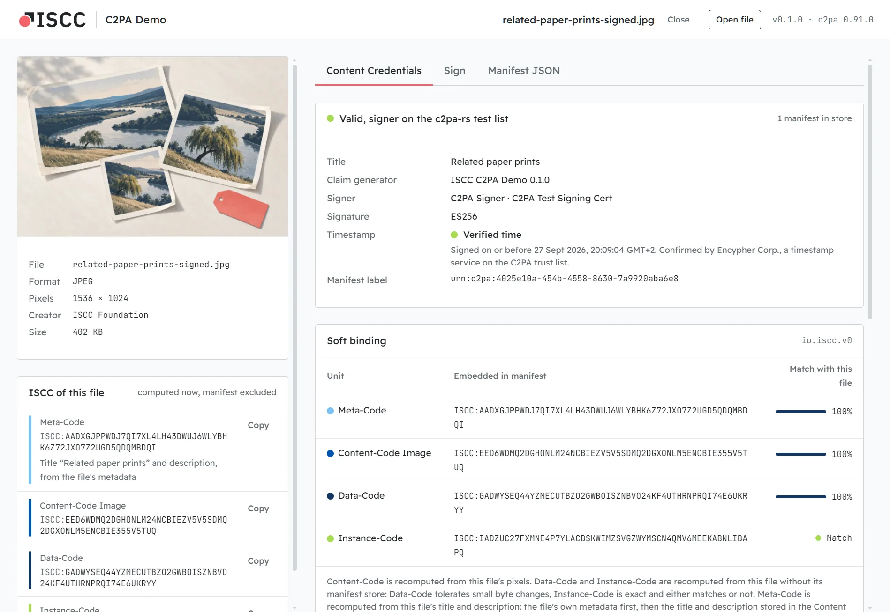
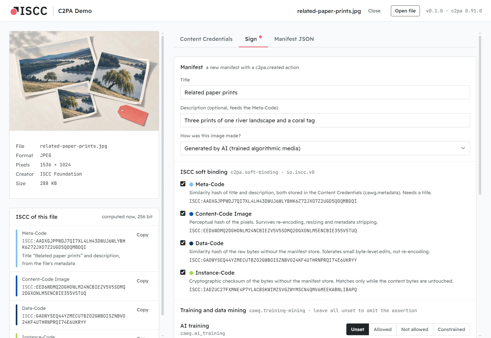

Windows
Windows 10 and 11, x64
Installer {{windows_size}}{{windows_name}}
SmartScreen shows “Windows protected your PC”. Choose More info, then Run anyway. The installer needs no admin rights.
Desktop app · Windows, macOS, Linux · Apache-2.0
Drop an image, a document or an audio file on the window. You see its C2PA manifest and the ISCC calculated from its content. Then sign a copy whose manifest carries that ISCC, and watch how each part of the code holds up.

Validation state, signer and trust list, timestamp, actions, ingredients and every assertion of the C2PA manifest store. The official C2PA trust lists are built in. Inspecting never goes online.
Meta-Code, Content-Code, Data-Code and Instance-Code, extracted with the rules of iscc-sdk. The tests check every unit against its output, bit for bit.
Decode an ISCC soft binding from the manifest and compare each unit with the file in front of you, as a similarity for the codes that measure it and as match or no match for the checksum.
Write a signed copy with the soft binding, the title behind the Meta-Code, an optional CAWG training and data mining assertion and an RFC 3161 timestamp. Use the built-in demo certificate or your own.
Why a soft binding
A C2PA manifest is tied to its file by a hard binding: a cryptographic hash of the exact bytes. That is right for proving nothing changed, and it breaks as soon as anything does. Platforms strip manifests, and a resized or re-encoded copy no longer matches.
A soft binding is calculated from the content itself. A copy that lost its manifest still gives a similar code,
which a service can use to find the manifest again. IEP-0020
defines how an ISCC is stored as the value of a c2pa.soft-binding assertion with the algorithm
io.iscc.v0.
This app writes and checks the binding. Looking manifests up by ISCC needs a registry or discovery service, which the app does not include.

Sign a copy
The form is prefilled from the file: its own title and description, all four units, the demo certificate and a timestamp. A file that already has Content Credentials gets a new manifest with the old one as its parent ingredient. The source is never touched; the signed copy lands next to it.
Signed copies of JPEG, PNG, GIF, M4A, plain text and Markdown match every unit at 100%. Other formats keep traces of a removed manifest, so their Data-Code lands close to 100% and the Instance-Code does not match. The app says which and why.
Formats
Every format c2pa-rs can embed a manifest into, so every file the app opens it can also sign.
| Kind | Formats | Content-Code from |
|---|---|---|
| Images | JPEG, PNG, WebP, GIF, TIFF, SVG | the pixels; SVG rendered with resvg |
| Documents | EPUB, DOCX, PPTX, XLSX, ODT, ODS, ODP, TXT, Markdown | the text in reading order |
| Audio | MP3, FLAC, WAV, M4A (AAC, ALAC) | a Chromaprint fingerprint of the decoded audio |
Download · {{version_label}}
The builds are not code-signed yet, so your system will ask once before the first start. Each card says how.
Windows 10 and 11, x64
Installer {{windows_size}}{{windows_name}}
SmartScreen shows “Windows protected your PC”. Choose More info, then Run anyway. The installer needs no admin rights.
macOS 11 or later, Apple silicon and Intel
Disk image {{macos_size}}{{macos_name}}
Drag the app to Applications and open it. macOS refuses the first time: open System Settings → Privacy & Security and choose Open Anyway. Or clear the quarantine flag in a terminal:
xattr -dr com.apple.quarantine "/Applications/ISCC C2PA Demo.app"x86_64, WebKitGTK 4.1
AppImage {{appimage_size}}{{appimage_name}}
Make it executable and run it: chmod +x iscc-c2pa-demo-*.AppImage. Or install the
.deb (Debian, Ubuntu) or the .rpm (Fedora, openSUSE).
Checksums: SHA256SUMS · Release notes · All releases
Build from source
The core is Rust: c2pa-rs for Content Credentials, iscc-lib for the ISCC, and pure Rust readers for images, documents and audio. No external tools, no Python. The window is a Tauri web view without a UI framework.
The same core ships as a command-line tool, c2pa-iscc, that prints the JSON the app works with.
Build it from source for scripts and agents.
git clone https://github.com/iscc/iscc-c2pa-demo
cd iscc-c2pa-demo
pnpm install
pnpm tauri dev
# the command-line tool
cd src-tauri
cargo run --features cli --bin c2pa-iscc -- inspect photo.jpg --no-preview
cargo run --features cli --bin c2pa-iscc -- sign photo.jpgNeeds Rust 1.96 or later, Node 22.12 or later and pnpm. On Linux also the Tauri system libraries.
Good to know